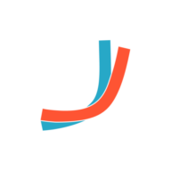
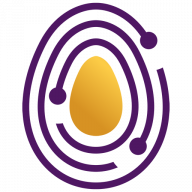
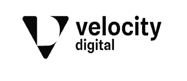

Why we started
For many professionals, a community is where they learn, find their peers and hear about their first opportunity. Their leaders know the people and earn their trust over time. Yet companies often have no practical way to work with that network beyond a single introduction or event.
Since 2021, Propel has been building that connection: community relationships, programme operations and a platform that helps organise participation and opportunity.
Our work began with deep relationships in African tech communities. Today, we serve global companies and deliver programmes shaped to specific markets, including AI learning in Portugal.
Our story so far
- 2021
Propel begins
Building community relationships, programme operations and a platform, starting in African tech communities.
- 2022
Google Black Founders Fund Europe
Propel was selected for the Google Black Founders Fund Europe.
- Across markets
Global companies, local delivery
Serving global companies with programmes shaped to specific markets, including AI learning in Portugal.
Our mission
Connect the world's specialised communities to meaningful work, learning and opportunity.
Our vision
An open talent economy where communities create lasting economic opportunity, and companies can work with skilled people across borders.
What we value
Opportunity
A programme should open a useful next step for the people taking part: a skill, a project, a role or a new source of income.
Trust by design
Clear expectations, relevant checks and responsible delivery help participants and companies work together with confidence.
Community first
Community leaders and members are partners in the work. Their goals and the value they receive belong in the programme from the beginning.
Speed without shortcuts
We plan around the client's timeline while giving selection, participant support and delivery the attention they need.
Impact
We care about what people actually complete, build and apply. The report should show the outcome alongside the activity that led to it.
Companies we've worked with
Our backing and support
We've raised funding from investors across Europe, Africa, and North America – including some of the most respected names in early-stage tech.



Propel in the press
- TechCrunchPropel's community-led approach to tech talent.
- The SaaS NewsPropel's seed funding announcement.
- IT News AfricaFunding to support tech talent communities.
- EU StartupsBerlin-based Propel and underrepresented tech communities.
- Tech.euBringing benefits and talent opportunities to communities.
- Techpoint AfricaPropel's seed round.
- CondiaNigerian-founded recipients of the Black Founders Fund Europe.